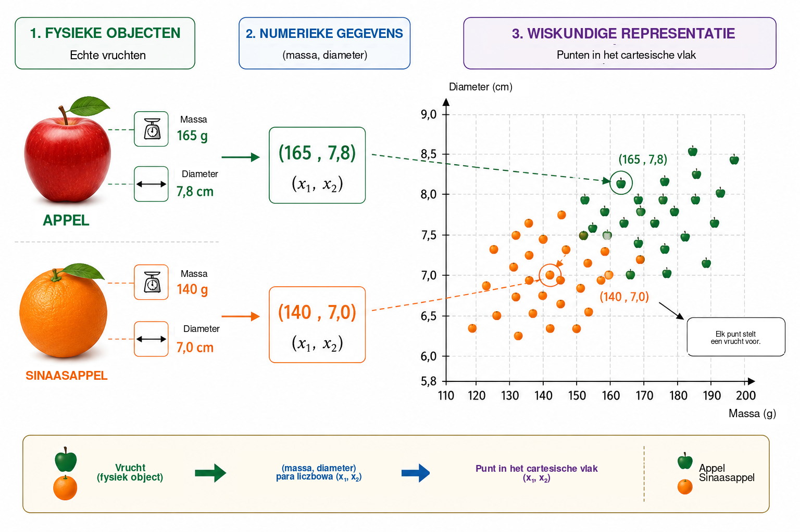
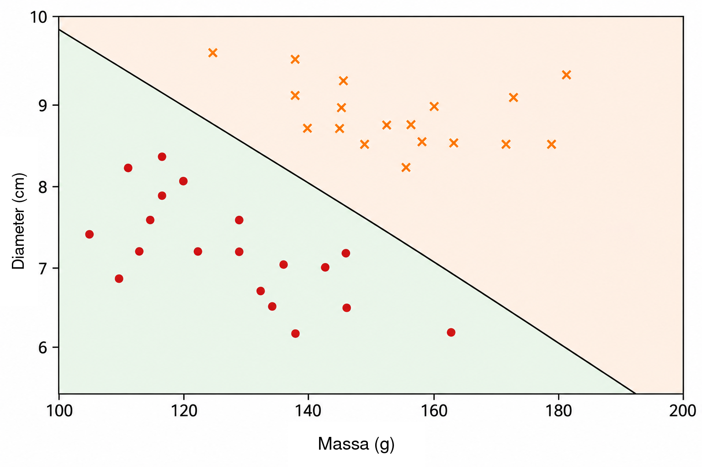
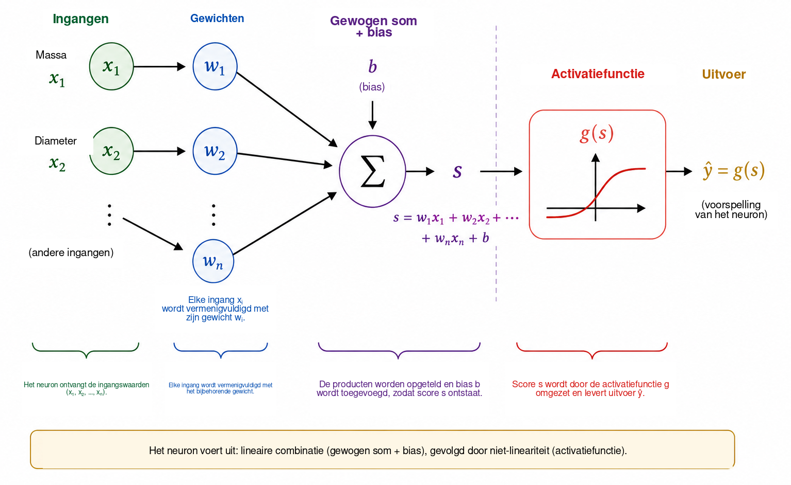
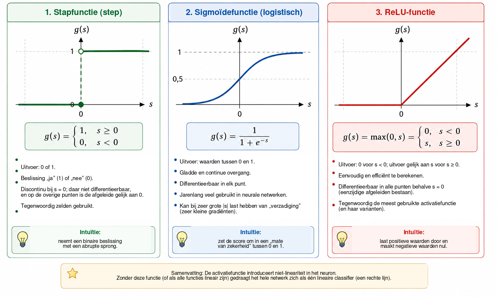
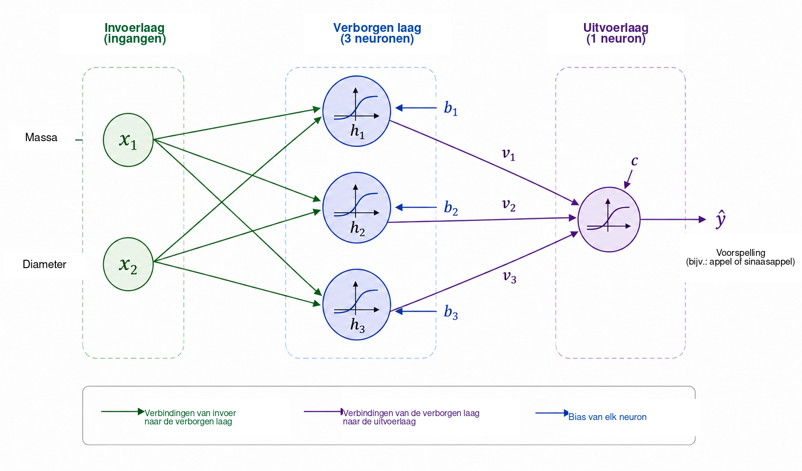
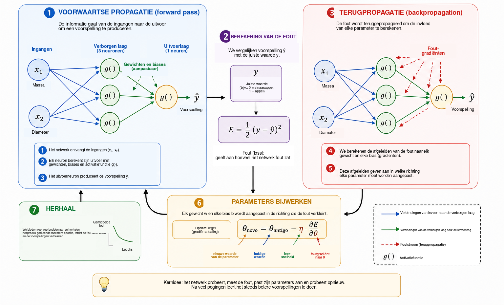
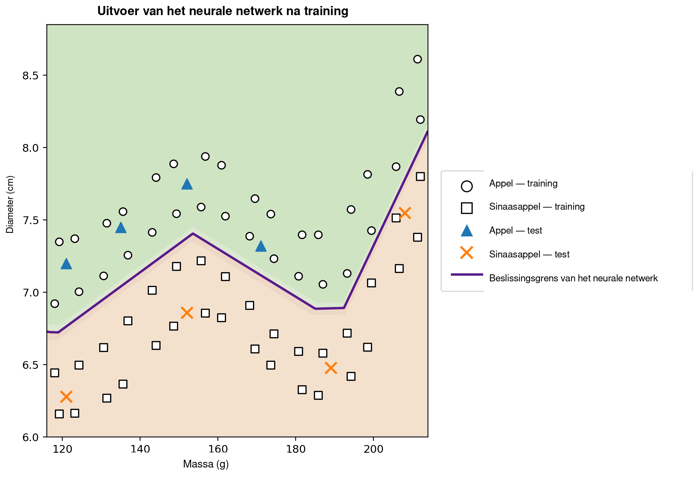

Wanneer kan een computer leren?
In het dagelijks leven nemen we bijna ongemerkt classificatiebeslissingen. Door naar een vrucht te kijken, herkennen we snel of het een appel of een sinaasappel is; wanneer er een bericht op een telefoon binnenkomt, onderscheiden we een legitiem gesprek van ongewenste reclame; bij medische analyses kunnen verschillende metingen worden gecombineerd om een beslissing te ondersteunen; en in financiële instellingen worden meerdere gegevens beoordeeld voordat krediet wordt verleend. In al deze voorbeelden worden verschillende kenmerken gezamenlijk beschouwd om tot een antwoord te komen.
In veel traditionele computerprogramma’s worden de regels die dit antwoord opleveren expliciet door de programmeur geschreven. Deze aanpak werkt goed wanneer de regels bekend zijn en duidelijk kunnen worden geformuleerd. Ze wordt minder doeltreffend wanneer de gegevens sterk variëren of wanneer het moeilijk is vooraf alle voorwaarden voor een goede beslissing te formuleren. Dit leidt tot een natuurlijke vraag:
Kunnen we een programma bouwen dat een beslissingsregel uit voorbeelden leert, in plaats van de regel vooraf te ontvangen?
Dit is een van de centrale ideeën van machine learning, een gebied van de kunstmatige intelligentie dat methoden bestudeert waarmee modellen uit gegevens worden aangepast . Bij begeleid leren ontvangt het algoritme voorbeelden samen met de juiste antwoorden en zoeken we een model dat ook bruikbare voorspellingen kan doen voor gevallen die niet tijdens de training zijn gebruikt. Van de vele modellen die voor dit doel zijn ontwikkeld, zijn kunstmatige neurale netwerken belangrijk geworden in toepassingen zoals beeldherkenning, taalverwerking, signaalanalyse en voorspelling van tijdreeksen .
Het gebruik van neurale netwerken als brug tussen wiskunde, computationele methoden en onderwijs is al besproken in Professor de Matemática Online door Batista en Martins , die een activiteit presenteren rond lerarenopleiding, Python en cijferherkenning. Dit artikel volgt een aanvullende route. Ons voornaamste doel is de interne wiskunde van een klein neuraal netwerk zichtbaar te maken, te beginnen met analytische meetkunde en stap voor stap verder te gaan naar de berekening van gradiënten en een handmatige implementatie van terugpropagatie.
Ondanks de verfijning van moderne toepassingen kan de wiskundige kern van een neuraal netwerk worden ingevoerd met betrekkelijk vertrouwde ideeën. Op basaal niveau is een neuraal netwerk een compositie van functies waarvan de parameters uit gegevens worden aangepast. We beginnen met een eenvoudig meetkundig probleem, interpreteren een scheidende rechte opnieuw als een kunstmatig neuron, verbinden meerdere neuronen, bestuderen de rol van activatiefuncties en laten zien hoe afgeleiden kunnen worden gebruikt om de netwerkparameters automatisch aan te passen. Daarna implementeren we een volledig klein voorbeeld in Python, met een directe overeenkomst tussen de vergelijkingen en de code.
Het probleem wiskundig representeren
Om te begrijpen hoe een neuraal netwerk werkt, beginnen we met een bewust eenvoudig probleem: appels van sinaasappels onderscheiden. Een vrucht heeft veel kenmerken die hierbij nuttig kunnen zijn, zoals kleur, massa, diameter, textuur en aroma. Een eerste wiskundig model hoeft echter niet al deze complexiteit te bevatten. We gebruiken slechts twee eenvoudig meetbare grootheden: massa, in gram, en diameter, in centimeter.
Elke vrucht wordt daarom voorgesteld door een geordend paar \[(x_1,x_2),\] waarbij \[x_1=\text{massa} \qquad\text{en}\qquad x_2=\text{diameter}.\]
Het paar \((155,\;7.2)\) stelt dus een vrucht voor met een massa van \(155\) g en een diameter van \(7.2\) cm. Door het fysieke object te vervangen door twee numerieke metingen koppelen we elke vrucht aan een punt in het cartesische vlak: de eerste coördinaat geeft de massa en de tweede de diameter. Figuur 1 illustreert deze representatie voor een hypothetische verzameling appels en sinaasappels.

Deze transformatie verandert de schijnbare aard van het probleem. In plaats van rechtstreeks te vragen hoe een appel of een sinaasappel kan worden herkend, kunnen we een meetkundige vraag stellen: hoe kunnen de punten die tot de twee klassen behoren in het vlak worden gescheiden? Deze verandering van gezichtspunt is fundamenteel in machine learning. Beelden, teksten, geluiden en experimentele signalen moeten allemaal worden omgezet in numerieke representaties voordat een algoritme ze kan verwerken. In ons voorbeeld heeft elk object slechts twee coördinaten; in reële toepassingen kan een representatie honderden, duizenden of zelfs miljoenen componenten bevatten. Het principe blijft hetzelfde: elk voorbeeld wordt gekoppeld aan een verzameling getallen en het model zoekt een regel die deze representatie naar het gewenste antwoord afbeeldt.
We beginnen met de eenvoudigste beschikbare meetkundige regel en vragen of één rechte lijn de appelpunten voldoende van de sinaasappelpunten kan scheiden.
Een rechte lijn als classifier
Zodra elke vrucht als een punt in het cartesische vlak is voorgesteld, wordt classificatie een meetkundig probleem: kan een rechte lijn de appels van de sinaasappels scheiden? Deze vraag vat het basisidee samen van een belangrijke familie van machine-learningmethoden die bekendstaan als lineaire classifiers.
Beschouw een rechte die door de gegevenswolk loopt, zoals weergegeven in Figuur 2. De rechte verdeelt het vlak in twee halfvlakken. Als de meeste appelpunten aan de ene kant liggen en de meeste sinaasappelpunten aan de andere, kan de positie van een nieuwe vrucht ten opzichte van de rechte als classificatieregel worden gebruikt. Nadat massa en diameter zijn gemeten, stellen we de vrucht voor door een punt en bepalen we aan welke kant van de rechte dat punt ligt.

In het cartesische vlak \((x_1,x_2)\) kan een rechte worden beschreven door \[w_1x_1+w_2x_2+b=0, \qquad (w_1,w_2)\neq(0,0).\]
De vector \((w_1,w_2)\) staat loodrecht op de rechte en bepaalt daardoor haar oriëntatie, terwijl de parameter \(b\) bijdraagt aan haar positie. Deze representatie bevat een kleine redundantie: vermenigvuldiging van \(w_1\), \(w_2\) en \(b\) met dezelfde niet-nulle constante levert precies dezelfde rechte op. De parameters die de grens beschrijven zijn dus niet uniek. Hun numerieke interpretatie hangt bovendien af van de schaal van de variabelen. Omdat massa in gram en diameter in centimeter wordt gemeten, mogen de numerieke grootten van \(w_1\) en \(w_2\) niet worden vergeleken zonder rekening te houden met de verschillende eenheden.
De vergelijking van de rechte zelf geeft een eenvoudige manier om te bepalen aan welke kant van de grens een punt ligt. Definieer de score \[s(x_1,x_2)=w_1x_1+w_2x_2+b.\]
Als \(s(x_1,x_2)=0\), ligt het punt op de rechte. Als \(s(x_1,x_2)>0\), ligt het in het ene halfvlak; als \(s(x_1,x_2)<0\), ligt het in het andere. Als we afspreken dat positieve scores overeenkomen met appels en negatieve scores met sinaasappels, wordt de regel \[\begin{cases} s(x_1,x_2)\geq 0 & \Longrightarrow \text{appel},\\ s(x_1,x_2)<0 & \Longrightarrow \text{sinaasappel}. \end{cases}\]
Beschouw bijvoorbeeld de grens gedefinieerd door \[w_1=\frac{1}{10}, \qquad w_2=2, \qquad b=-30.\] Voor een vrucht met massa \(160\) g en diameter \(7.8\) cm, \[\begin{aligned} s &=\frac{1}{10}\times160+2\times7.8-30\\ &=16+15.6-30\\ &=1.6. \end{aligned}\] Omdat de score positief is, ligt het punt in het halfvlak dat we met appels hebben geassocieerd. Deze classifier zou de vrucht dus als appel classificeren.
Niet elke keuze van \(w_1\), \(w_2\) en \(b\) levert een goede classificatie op. Sommige rechten scheiden de twee groepen slecht, terwijl andere minder fouten maken. Het leerprobleem bestaat er precies in eerder gelabelde voorbeelden te gebruiken om parameterwaarden te bepalen die een maat voor de modelfout verkleinen. In plaats van de positie van de rechte rechtstreeks te programmeren, willen we dat het algoritme zijn coëfficiënten op basis van de gegevens aanpast.
Eén rechte kan goed werken wanneer de klassen ongeveer lineair scheidbaar zijn. Complexere gegevensverzamelingen kunnen een niet-lineaire grens vereisen. Voordat we die beperking behandelen, interpreteren we de zojuist geconstrueerde classifier opnieuw als een elementaire rekeneenheid: een kunstmatig neuron.
Het kunstmatige neuron
In de vorige sectie werd de uitdrukking \[s=w_1x_1+w_2x_2+b\] gebruikt om te bepalen aan welke kant van een rechte een vrucht ligt. Dezelfde uitdrukking kan worden gezien als de eerste stap van de berekening die door een kunstmatig neuron wordt uitgevoerd. Een neuron ontvangt numerieke ingangen, combineert die met gewichten en een bias en past vervolgens een wiskundige functie toe om zijn uitvoer te verkrijgen.
In ons voorbeeld zijn de ingangen de massa \(x_1\) en de diameter \(x_2\). Elke ingang wordt vermenigvuldigd met een parameter die een gewicht wordt genoemd; de producten worden opgeteld samen met een constante term \(b\), de bias. Figuur 3 toont deze berekening schematisch.

De gewichten bepalen hoe veranderingen in de ingangen de score beïnvloeden. Als \(x_2\) en alle andere grootheden constant worden gehouden, verandert een variatie \(\Delta x_1\) de score \(s\) met \(w_1\Delta x_1\). Op dezelfde manier verandert een variatie \(\Delta x_2\) de score met \(w_2\Delta x_2\). Ook het teken is van belang: een positief gewicht zorgt ervoor dat een toename van de ingang de score verhoogt, terwijl een negatief gewicht het tegenovergestelde effect heeft. Deze interpretatie moet voorzichtig worden gebruikt wanneer verschillende variabelen verschillende eenheden en schalen hebben. Daarom worden invoergegevens in praktische implementaties vaak vóór de training genormaliseerd of gestandaardiseerd.
De bias \(b\) is de constante term in de affiene transformatie. Meetkundig maakt hij het mogelijk de beslissingsgrens te verschuiven. Als \(b=0\), dwingt de vergelijking \[w_1x_1+w_2x_2=0\] de rechte door de oorsprong te gaan. Met een bias kan de grens naar andere posities verschuiven. Equivalent geldt dat, wanneer \(x_1=x_2=0\), de score eenvoudig \(s=b\) is.
De score hoeft niet de uiteindelijke uitvoer van het neuron te zijn. In het algemeen wordt er een activatiefunctie \(g\) op toegepast: \[\widehat{y}=g(s)=g\left(w_1x_1+w_2x_2+b\right).\] De berekening bestaat dus uit twee stappen, \[\begin{aligned} s &= w_1x_1+w_2x_2+b,\\[4pt] \widehat{y} &= g(s). \end{aligned}\]
Met de parameterwaarden uit de vorige sectie krijgen we \(s=1.6\). Als we de stapfunctie kiezen \[g(s)= \begin{cases} 1, & s\geq0,\\ 0, & s<0, \end{cases}\] dan is \(\widehat{y}=g(1.6)=1\). Volgens onze conventie wordt de vrucht als appel geclassificeerd. Met deze activatie verandert de beslissing wanneer \(s\) nul passeert, zodat de klassengrens precies \[w_1x_1+w_2x_2+b=0.\]
Een enkel neuron is dus een eenvoudig wiskundig object met aanpasbare parameters. De werkelijke betekenis ervan ontstaat wanneer veel van zulke eenheden met elkaar worden verbonden. Voordat we een netwerk bouwen, moeten we echter begrijpen waarom de activatiefunctie essentieel is.
Waarom hebben we een activatiefunctie nodig?
Een neuron berekent eerst een score met een affiene transformatie en past pas daarna een activatiefunctie toe. Deze tweede stap is essentieel als een neuraal netwerk complexe relaties moet kunnen representeren. Stel om dit te zien een netwerk voor waarin geen activatiefuncties worden gebruikt. Elke eenheid zou dan de vorm hebben \[y=w_1x_1+w_2x_2+b.\]
Voor een eendimensionaal voorbeeld nemen we aan dat een eerste eenheid produceert \[h=ax+b\] en dat een tweede berekent \[y=ch+d.\] Invullen geeft \[y=c(ax+b)+d=acx+(cb+d),\] wat nog steeds een affiene functie van \(x\) is. Hetzelfde geldt in meerdere dimensies: een compositie van affiene transformaties blijft affien. Het toevoegen van veel lagen zonder een niet-lineaire bewerking maakt het netwerk daarom niet fundamenteel expressiever; de volledige compositie zou door één affiene transformatie kunnen worden vervangen.
Een activatiefunctie doorbreekt deze beperking. Nadat de score \(s\) is berekend, past het neuron een doorgaans niet-lineaire afbeelding toe \[h=g(s).\] Wanneer meerdere van zulke eenheden worden verbonden, kan de resulterende compositie niet langer tot één affiene transformatie worden gereduceerd. Daardoor kan het netwerk complexere beslissingsgrenzen construeren.
De eenvoudigste activatie is de stapfunctie, \[g(s)= \begin{cases} 1, & s\geq0,\\ 0, & s<0. \end{cases}\] Ze levert een binaire beslissing en is zeer nuttig om classificatie te begrijpen. Haar afgeleide is echter nul voor \(s\neq0\) en niet gedefinieerd bij \(s=0\). Omdat training op basis van gradiënten afgeleiden gebruikt om te bepalen hoe de parameters moeten veranderen, is de stapfunctie niet geschikt voor dat trainingsmechanisme.
Een alternatief is de sigmoïdefunctie, \[\sigma(s)=\frac{1}{1+e^{-s}}.\] Ze beeldt elk reëel getal af op een waarde strikt tussen \(0\) en \(1\). Voor zeer negatieve \(s\) nadert de uitvoer \(0\); voor zeer positieve \(s\) nadert hij \(1\); tussen deze uitersten verloopt de overgang glad. De sigmoïde is overal differentieerbaar, met \[\sigma'(s)=\sigma(s)\bigl(1-\sigma(s)\bigr).\] Omdat de uitvoer tussen \(0\) en \(1\) ligt, wordt de sigmoïde vaak gebruikt in de uitvoerlaag van een binaire classifier. Binnen een probabilistische formulering met een geschikte verliesfunctie kan de uitvoer worden geïnterpreteerd als een schatting van de kans op de klasse die door \(1\) wordt voorgesteld. In verborgen lagen kan de sigmoïde echter een probleem veroorzaken: voor ingangen met grote absolute waarde wordt haar afgeleide zeer klein, wat bijdraagt aan het vanishing-gradient-probleem in diepe netwerken.
Een veelgebruikte activatie in verborgen lagen is de ReLU (Rectified Linear Unit), \[\operatorname{ReLU}(s)=\max(0,s) = \begin{cases} 0, & s<0,\\ s, & s\geq0. \end{cases}\] Hoewel ReLU uit twee lineaire stukken bestaat, is de functie niet globaal lineair. De afgeleide is \(0\) voor \(s<0\) en \(1\) voor \(s>0\). Bij \(s=0\) bestaat de gewone afgeleide niet en gebruiken software-implementaties een conventie voor de gradiënt. Voor positieve ingangen wordt de afgeleide niet kleiner wanneer \(s\) groeit, waardoor een van de verzadigingsmechanismen van de sigmoïde wordt vermeden.
Figuur 4 vergelijkt deze drie activaties visueel: de abrupte sprong van de stapfunctie, de gladde overgang van de sigmoïde en de verandering van helling van ReLU.

Hun belangrijkste eigenschappen zijn hieronder samengevat.
| Functie | Uitvoer | Afgeleide | Typisch gebruik |
|---|---|---|---|
| Stapfunctie | \(\{0,1\}\) | Nul voor \(s\neq0\); niet gedefinieerd bij \(s=0\) | Historische modellen en didactische voorbeelden |
| Sigmoïde | \((0,1)\) | Bestaat voor elke \(s\) | Uitvoerlaag bij binaire classificatie |
| ReLU | \([0,\infty)\) | \(0\) for \(s<0\) and \(1\) for \(s>0\) | Verborgen lagen |
De details van deze functies verschillen, maar hun gemeenschappelijke conceptuele rol is het introduceren van niet-lineariteit. Juist die niet-lineariteit stelt het kleine netwerk in de volgende sectie in staat relaties te representeren die niet door één rechte lijn kunnen worden beschreven.
Voor lezers die verder willen gaan, biedt Haykin een klassieke behandeling van neurale netwerken, terwijl Goodfellow, Bengio en Courville activatiefuncties en de training van diepe netwerken in een bredere context bespreken. De vrij beschikbare tekst van Nielsen is bijzonder toegankelijk om intuïtie te ontwikkelen over neuronen, activaties en leren.
Een klein neuraal netwerk bouwen
We beschouwen nu een netwerk met twee ingangen, één verborgen laag met drie neuronen en één uitvoerneuron. De ingangen blijven \[x_1=\text{massa}, \qquad x_2=\text{diameter},\] en beide worden aan elk verborgen neuron aangeboden, zoals weergegeven in Figuur 5.

Noem de uitgangen van de verborgen laag \(h_1\), \(h_2\) en \(h_3\). Elk neuron ontvangt dezelfde twee ingangen, maar heeft zijn eigen gewichten en bias: \[\begin{aligned} h_1&=g\left(w_{11}x_1+w_{12}x_2+b_1\right),\\[4pt] h_2&=g\left(w_{21}x_1+w_{22}x_2+b_2\right),\\[4pt] h_3&=g\left(w_{31}x_1+w_{32}x_2+b_3\right). \end{aligned}\]
Hoewel alle drie de neuronen dezelfde massa en diameter ontvangen, kunnen zij verschillende antwoorden produceren omdat hun parameters verschillen. Tijdens de training worden deze parameters zo aangepast dat de tussenliggende activaties nuttig worden voor classificatie.
De drie grootheden \(h_1\), \(h_2\) en \(h_3\) worden vervolgens doorgegeven aan het uitvoerneuron, dat berekent \[s_{\mathrm{out}}=v_1h_1+v_2h_2+v_3h_3+c\] en produceert \[\widehat{y}=g_{\mathrm{out}}\left(s_{\mathrm{out}}\right).\] Voor ons binaire probleem gebruiken we een sigmoïde uitvoer: \[\widehat{y}=\sigma\left(v_1h_1+v_2h_2+v_3h_3+c\right), \qquad 0<\widehat{y}<1.\]
Met \(y=1\) voor appel en \(y=0\) voor sinaasappel geeft een drempel van \(0.5\) de klassebeslissing \[\widehat{y}\geq0.5 \Longrightarrow \text{appel}, \qquad \widehat{y}<0.5 \Longrightarrow \text{sinaasappel}.\] Waarden dicht bij \(1\) worden dus sterk met appels geassocieerd, terwijl waarden dicht bij \(0\) met sinaasappels worden geassocieerd. Zoals eerder opgemerkt vereist de numerieke interpretatie van \(\widehat{y}\) als kans aanvullende aannames over het model en de training. Voor de hier gebruikte classificatieregel volstaat het \(\widehat{y}\) te beschouwen als een continue netwerkuitvoer.
Het centrale kenmerk van deze architectuur is de tussenrepresentatie \[(x_1,x_2) \longrightarrow (h_1,h_2,h_3) \longrightarrow \widehat{y}.\] Het netwerk ontvangt twee kenmerken en construeert drie nieuwe grootheden voordat het uiteindelijke antwoord wordt geproduceerd. Deze activaties worden niet handmatig gekozen: ze hangen af van de gewichten en biases en veranderen dus wanneer de parameters worden getraind.
Ondanks zijn geringe omvang heeft het netwerk al dertien aanpasbare parameters. De drie verborgen neuronen bevatten \[3(2+1)=9\] parameters, en het uitvoerneuron draagt bij met \[3+1=4.\] Daarom, \[9+4=13.\]
Dezelfde telling wordt transparant in matrixnotatie. Definieer \[\mathbf{x}= \begin{bmatrix} x_1\\x_2 \end{bmatrix}, \qquad W^{(1)}= \begin{bmatrix} w_{11}&w_{12}\\ w_{21}&w_{22}\\ w_{31}&w_{32} \end{bmatrix}, \qquad \mathbf{b}^{(1)}= \begin{bmatrix} b_1\\b_2\\b_3 \end{bmatrix}.\] Dan kan de verborgen laag compact worden geschreven als \[\mathbf{h}=g\left(W^{(1)}\mathbf{x}+\mathbf{b}^{(1)}\right),\] waarbij \(g\) component voor component werkt. Voor de uitvoer, \[\widehat{y} = \sigma\left(W^{(2)}\mathbf{h}+b^{(2)}\right),\] met \[W^{(2)}= \begin{bmatrix} v_1&v_2&v_3 \end{bmatrix}.\]
Deze notatie loopt vooruit op de structuur die in het Python-programma zal verschijnen. Wanneer een vrucht aan de ingang wordt aangeboden en we de opeenvolgende activaties berekenen totdat \(\widehat{y}\) is verkregen, voeren we voorwaartse propagatie of een forward pass uit. De centrale vraag blijft: hoe kunnen de dertien parameters automatisch worden bepaald zodat de voorspellingen bij de gegevens passen?
Hoe leert een neuraal netwerk?
De gewichten en biases zijn niet vooraf bekend. Ze moeten worden aangepast met voorbeelden waarvoor het juiste antwoord beschikbaar is. Dit proces heet training en kan worden samengevat door de cyclus \[\boxed{\text{voorspel}} \longrightarrow \boxed{\text{meet de fout}} \longrightarrow \boxed{\text{pas de parameters aan}} \longrightarrow \boxed{\text{herhaal}}.\]
Beschouw een vrucht met massa \(140\) g en diameter \(7.0\) cm waarvan de juiste klasse sinaasappel is, dus \(y=0\). Stel dat het netwerk op een bepaald moment tijdens de training \(\widehat{y}=0.80\) uitvoert. Een eenvoudige maat voor het verschil tussen voorspelling en doelwaarde is de kwadratische fout \[E=\frac{1}{2}\left(y-\widehat{y}\right)^2.\] Voor dit voorbeeld, \[E=\frac{1}{2}(0-0.80)^2=0.32.\]
Deze uitdrukking is een verliesfunctie voor één voorbeeld. Omdat het een kwadraat is, geldt \(E\geq0\), en voorspellingen die verder van de doelwaarde liggen krijgen een grotere straf. De factor \(1/2\) verandert de plaats van het minimum niet, maar vereenvoudigt de afgeleiden. Bij binaire classificatie worden vaak andere verliesfuncties gebruikt, vooral kruisentropie. We gebruiken hier de kwadratische fout omdat de algebra transparant is en voldoende is om optimalisatie en terugpropagatie te introduceren .
Als de trainingsset \(N\) voorbeelden bevat, is een globale maat het gemiddelde verlies \[J=\frac{1}{N}\sum_{i=1}^{N}E_i.\] Elke voorspelling hangt af van de gewichten en biases van het netwerk, zodat ook \(J\) van al deze parameters afhangt. Trainen betekent zoeken naar parameterwaarden die \(J\) klein maken.
Om het aanpassingsmechanisme te begrijpen, stellen we ons eerst voor dat alle parameters behalve één gewicht \(w\) vast worden gehouden. We kunnen het verlies dan beschouwen als een functie \(J=J(w)\). Figuur 6 vat de basisstappen van de training samen die we nu bekijken.

Voor lezers met weinig achtergrond in analyse kan een afgeleide hier worden geïnterpreteerd als een maat voor lokale gevoeligheid: zij geeft aan hoe een kleine verandering in één parameter het verlies doorgaans verandert. Het teken geeft aan in welke richting de functie lokaal toeneemt of afneemt, terwijl de grootte de sterkte van die lokale verandering meet.
De afgeleide \[\frac{\partial J}{\partial w}\] geeft de lokale helling. Als deze positief is, zal een kleine toename van \(w\) doorgaans \(J\) vergroten, zodat het gewicht in de tegenovergestelde richting moet bewegen. Als de afgeleide negatief is, zal een toename van \(w\) lokaal juist \(J\) verkleinen. Beide gevallen worden beschreven door \[w_{\mathrm{new}} = w_{\mathrm{old}} - \eta\frac{\partial J}{\partial w},\] wat het basisidee is van gradiëntafdaling. Het positieve getal \(\eta\) is de leersnelheid; het bepaalt de stapgrootte. Een zeer kleine waarde kan de training traag maken, terwijl een te grote waarde oscillaties of instabiliteit kan veroorzaken.
Voor een netwerk met veel parameters laat \(\theta\) een willekeurig gewicht of een willekeurige bias aanduiden. De update wordt \[\theta_{\mathrm{new}} = \theta_{\mathrm{old}} - \eta\frac{\partial J}{\partial\theta}.\] De verzameling van alle partiële afgeleiden vormt de gradiënt van het verlies. Meetkundig wijst de gradiënt in de richting van de snelste lokale toename, zodat de negatieve gradiënt een lokale richting van afname geeft.
We moeten deze afgeleiden nog berekenen wanneer het netwerk een compositie van meerdere functies is. Tijdens de forward pass stroomt de informatie als \[\text{ingangen} \longrightarrow \text{verborgen laag} \longrightarrow \text{uitvoer}.\] Om te bepalen hoe een parameter in een vroege laag het verlies beïnvloedt, volgen we wiskundig de keten van afhankelijkheden in omgekeerde richting. Deze procedure heet terugpropagatie of backpropagation. In essentie is het een systematische en efficiënte toepassing van de kettingregel. Rumelhart, Hinton en Williams vormen een klassieke referentie voor de popularisering van deze procedure in netwerken met verborgen lagen; Nielsen geeft een gedetailleerde en bijzonder didactische afleiding.
Voor een eenvoudige afhankelijkheidsketen waarin \(E\) afhangt van \(\widehat{y}\), dat afhangt van een activatie \(h\), die op haar beurt afhangt van een gewicht \(w\), geeft de kettingregel \[\frac{\partial E}{\partial w} = \frac{\partial E}{\partial\widehat{y}} \, \frac{\partial\widehat{y}}{\partial h} \, \frac{\partial h}{\partial w}.\] Elke factor beschrijft één stap in de invloed van \(w\) op het uiteindelijke verlies. Grotere netwerken bevatten veel van zulke ketens en terugpropagatie organiseert de berekening zo dat tussenliggende afgeleiden opnieuw kunnen worden gebruikt in plaats van voor elke parameter afzonderlijk opnieuw te worden berekend.
In de praktijk gebruikt training veel voorbeelden. Eén volledige doorgang door de trainingsset heet een epoch. Parameters kunnen na elk voorbeeld worden bijgewerkt, zoals in het didactische programma verderop in dit artikel, of na kleine groepen voorbeelden die mini-batches worden genoemd, wat gebruikelijk is in grotere netwerken. In beide gevallen wordt de cyclus van voorspellingen, verliezen, gradiënten en updates gedurende veel epochs herhaald.
Een concrete manier om deze evolutie te visualiseren is de voorspelling voor één vast voorbeeld in verschillende trainingsfasen te volgen. Beschouw opnieuw de vrucht met massa \(140\) g en diameter \(7.0\) cm, waarvan de juiste klasse sinaasappel is. Tabel 1 toont een hypothetisch verloop. Deze waarden horen niet bij een specifieke uitvoering; ze illustreren alleen het mechanisme.
| Epoch | Voorspelling \(\widehat{y}\) | Verlies \(E\) | Classificatie |
|---|---|---|---|
| 1 | 0.86 | 0.37 | Appel |
| 5 | 0.71 | 0.25 | Appel |
| 10 | 0.55 | 0.15 | Appel |
| 20 | 0.31 | 0.05 | Sinaasappel |
| 40 | 0.09 | 0.004 | Sinaasappel |
Aan het begin ligt de uitvoer dicht bij \(1\) en wordt de vrucht ten onrechte als appel geclassificeerd. Naarmate de parameters worden aangepast, daalt de voorspelling en passeert zij uiteindelijk de drempel \(0.5\), waardoor de juiste klasse wordt verkregen. Wat tijdens dit proces verandert, zijn de numerieke waarden van de gewichten en biases; de netwerkarchitectuur blijft vast.
Het verkleinen van het verlies op de trainingsgegevens is niet het uiteindelijke doel. Een bruikbaar netwerk moet ook goede voorspellingen doen voor voorbeelden die niet zijn gebruikt om de parameters aan te passen. Dit vermogen heet generalisatie. Wanneer een model zich te sterk aanpast aan bijzonderheden van de trainingsset en slechter presteert op nieuwe gegevens, spreken we van overfitting. Bij zorgvuldiger evaluaties worden gegevens doorgaans verdeeld in trainings-, validatie- en testsets: de eerste wordt gebruikt om de parameters aan te passen, de tweede ondersteunt keuzes tijdens de ontwikkeling van het model en de derde wordt gereserveerd voor de uiteindelijke evaluatie. Uitgebreidere besprekingen van generalisatie en modelevaluatie zijn te vinden bij Faceli et al. en Goodfellow, Bengio en Courville .
We hebben daarmee de wiskundige betekenis van leren in een neuraal netwerk bereikt. In deze context betekent leren dat de parameters van een samengestelde functie zo worden aangepast dat een foutmaat op de gegevens afneemt en het model idealiter generaliseert naar nieuwe voorbeelden. Het netwerk voorspelt, berekent een verlies, gebruikt afgeleiden om te bepalen hoe zijn parameters dat verlies beïnvloeden en voert vervolgens een reeks kleine correcties uit.
Van wiskunde naar Python
We gaan nu van vergelijkingen naar een uitvoerbaar programma. Het doel is niet om een gespecialiseerde bibliotheek voor neurale netwerken te gebruiken, maar om met NumPy rechtstreeks de wiskundige bewerkingen te implementeren die in dit artikel zijn ontwikkeld . Daardoor is regel voor regel zichtbaar hoe lineaire combinaties, activatiefuncties, verliesberekening, terugpropagatie en gradiëntafdaling in code verschijnen.
Voor een overtuigender slotvoorbeeld gebruiken we een synthetische gegevensverzameling die over een groter massa–diameterdomein is verspreid. We blijven met slechts twee fysieke kenmerken werken — massa in gram en diameter in centimeter — maar verdelen nu \(64\) trainingsvoorbeelden over een groot gebied van het vlak en reserveren acht extra voorbeelden voor een illustratieve test. De gegevens blijven synthetisch en liggen binnen plausibele bereiken voor appels en sinaasappels. Ze zijn zo geconstrueerd dat een niet-lineaire beslissingsgrens ontstaat zonder alle punten in enkele overdreven kunstmatige clusters te concentreren.
Het meetkundige idee is eenvoudig. We definiëren een referentiecurve in het massa–diametervlak, plaatsen appels in twee banden boven die curve en sinaasappels in twee banden eronder. Aan zowel massa als diameter worden kleine deterministische verstoringen toegevoegd, zodat de waarnemingen een groter gebied beslaan. Het resulterende voorbeeld is rijker dan de eerdere illustraties: het bevat meer punten, de gegevens zijn over het domein verspreid en de passende beslissingsgrens is duidelijk sterker gekromd dan een rechte lijn.
Voor dit laatste computationele experiment vergroten we de verborgen laag tot twaalf ReLU-neuronen. Dit verandert de conceptuele structuur uit de vorige secties niet; het vergroot alleen het vermogen van het netwerk om een complexere grens te representeren. In plaats van de \(13\) parameters van het didactische netwerk met drie neuronen hebben we nu \(49\) aanpasbare parameters: \(24\) gewichten en \(12\) biases in de eerste laag, gevolgd door \(12\) gewichten en één bias in de uitvoerlaag. De vergelijkingen behouden exact dezelfde vorm; alleen de vectoren en matrices worden groter.
Het volledige programma staat hieronder.
import numpy as np
import matplotlib.pyplot as plt
from matplotlib.lines import Line2D
def relu(s):
return np.maximum(0, s)
def relu_derivative(s):
return (s > 0).astype(float)
def sigmoid(s):
return 1 / (1 + np.exp(-s))
def base_boundary(m):
return 6.68 + 0.74*np.exp(-((m-155)/20)**2) \
+ 1.50/(1 + np.exp(-(m-202)/5))
def build_data():
masses_1 = np.linspace(118, 212, 16)
masses_2 = masses_1 + np.array([
1.2,-1.1,0.8,-1.3,1.0,-0.8,1.1,-1.0,
1.3,-0.9,0.9,-1.2,1.0,-1.0,0.8,-0.7
])
k = np.arange(16)
a1 = np.column_stack([
masses_1,
base_boundary(masses_1) + 0.22 + 0.05*np.sin(0.8*k)
])
a2 = np.column_stack([
masses_2,
base_boundary(masses_2) + 0.58 + 0.06*np.cos(0.45*k)
])
o1 = np.column_stack([
masses_1,
base_boundary(masses_1) - (0.22 + 0.04*np.cos(0.7*k))
])
o2 = np.column_stack([
masses_2,
base_boundary(masses_2) - (0.55 + 0.05*np.sin(0.5*k))
])
X_train = np.vstack([a1, a2, o1, o2])
y_train = np.array([1.0]*32 + [0.0]*32)
X_test = np.array([
[121.0, 7.20], [135.0, 7.45],
[152.0, 7.75], [171.0, 7.32],
[121.0, 6.28], [152.0, 6.86],
[189.0, 6.48], [208.0, 7.55]
])
y_test = np.array([1,1,1,1,0,0,0,0], dtype=float)
return X_train, y_train, X_test, y_test
def predict(X, mean, std, W1, b1, W2, b2):
Xn = (X - mean) / std
outputs = []
for x in Xn:
h = relu(W1 @ x + b1)
y_hat = sigmoid(W2 @ h + b2)
outputs.append(y_hat)
return np.array(outputs)
X_train, y_train, X_test, y_test = build_data()
mean = X_train.mean(axis=0)
std = X_train.std(axis=0)
Xn = (X_train - mean) / std
rng = np.random.default_rng(42)
W1 = 0.1 * rng.standard_normal((12, 2))
b1 = np.zeros(12)
W2 = 0.1 * rng.standard_normal(12)
b2 = 0.0
eta = 0.05
n_epochs = 6000
history = []
for epoch in range(n_epochs):
for i in rng.permutation(len(Xn)):
x = Xn[i]
target = y_train[i]
z1 = W1 @ x + b1
h = relu(z1)
z2 = W2 @ h + b2
y_hat = sigmoid(z2)
delta2 = (y_hat - target) * y_hat * (1 - y_hat)
dW2 = delta2 * h
db2 = delta2
delta1 = (delta2 * W2) * relu_derivative(z1)
dW1 = np.outer(delta1, x)
db1 = delta1
W1 -= eta * dW1
b1 -= eta * db1
W2 -= eta * dW2
b2 -= eta * db2
errors = []
for x, target in zip(Xn, y_train):
h = relu(W1 @ x + b1)
y_hat = sigmoid(W2 @ h + b2)
errors.append(0.5 * (target - y_hat)**2)
history.append(np.mean(errors))
def make_figure():
masses = np.linspace(116, 214, 500)
diameters = np.linspace(6.0, 8.85, 500)
M, D = np.meshgrid(masses, diameters)
grid = np.column_stack([M.ravel(), D.ravel()])
P = predict(grid, mean, std, W1, b1, W2, b2).reshape(M.shape)
fig, ax = plt.subplots(figsize=(9.2, 6.3))
ax.contourf(
M, D, P,
levels=[0.0, 0.25, 0.50, 0.75, 1.0],
colors=["#f3e0cb", "#ecd5c4", "#dbe7cf", "#cde3bf"],
alpha=0.95
)
ax.contour(M, D, P, levels=[0.5],
colors=["#5a1a8a"], linewidths=2.2)
mask = y_train == 1.0
ax.scatter(X_train[mask,0], X_train[mask,1], marker="o",
s=48, facecolors="white", edgecolors="black",
linewidths=1.1, label="Appel - training")
mask = y_train == 0.0
ax.scatter(X_train[mask,0], X_train[mask,1], marker="s",
s=48, facecolors="white", edgecolors="black",
linewidths=1.1, label="Sinaasappel - training")
mask = y_test == 1.0
ax.scatter(X_test[mask,0], X_test[mask,1], marker="^",
s=92, color="#1f77b4", label="Appel - test")
mask = y_test == 0.0
ax.scatter(X_test[mask,0], X_test[mask,1], marker="x",
s=110, color="#ff7f0e", linewidths=2.0,
label="Sinaasappel - test")
ax.set_xlabel("Massa (g)")
ax.set_ylabel("Diameter (cm)")
ax.set_title("Uitvoer van het neurale netwerk na training")
handles = [
Line2D([0],[0], marker='o', markersize=9,
markerfacecolor='white', markeredgecolor='black',
linestyle='None', label='Appel - training'),
Line2D([0],[0], marker='s', markersize=9,
markerfacecolor='white', markeredgecolor='black',
linestyle='None', label='Sinaasappel - training'),
Line2D([0],[0], marker='^', markersize=9, color='#1f77b4',
linestyle='None', label='Appel - test'),
Line2D([0],[0], marker='x', markersize=10, color='#ff7f0e',
linestyle='None', label='Sinaasappel - test'),
Line2D([0],[0], color='#5a1a8a', lw=2.2,
label='Beslissingsgrens van het neurale netwerk')
]
ax.legend(handles=handles, loc='center left',
bbox_to_anchor=(1.02, 0.5), frameon=True)
fig.tight_layout()
plt.show()Hoewel de code langer is dan de eerste vergelijkingen die in het artikel zijn bestudeerd, blijft de structuur transparant. De functie build_data() genereert automatisch de \(64\) trainingsvoorbeelden en de acht illustratieve testvoorbeelden. Vervolgens standaardiseren we beide variabelen volgens \[x_j^{\ast}=\frac{x_j-\mu_j}{\sigma_j},\] waarbij \(\mu_j\) en \(\sigma_j\) uitsluitend uit de trainingsset worden berekend. Dit voorkomt dat de testset de parameterfit beïnvloedt en brengt massa en diameter bovendien op vergelijkbare numerieke schalen.
De forward pass verandert in wezen niet. Het enige verschil is dat de eerste laag nu een vector van twaalf verborgen activaties produceert. In matrixnotatie, \[\mathbf{z}^{(1)}=W^{(1)}\mathbf{x}+\mathbf{b}^{(1)}, \qquad \mathbf{h}=\operatorname{ReLU}(\mathbf{z}^{(1)}),\] \[z^{(2)}=W^{(2)}\mathbf{h}+b^{(2)}, \qquad \widehat{y}=\sigma(z^{(2)}).\] Deze vier regels bevatten nog steeds de wiskundige kern van het algoritme. Ook de training behoudt de eerder ingevoerde logica: bereken een voorspelling, meet de fout, propageer gevoeligheidsinformatie met behulp van afgeleiden terug en werk de parameters bij met kleine stappen van gradiëntafdaling.
In de code verschijnt terugpropagatie in de uitvoerlaag als
delta2 = (y_hat - target) * y_hat * (1 - y_hat)en propagatie naar de verborgen laag als
delta1 = (delta2 * W2) * relu_derivative(z1)gevolgd door updates van alle gewichten en biases. Omdat de voorbeelden in elke epoch worden geschud en de parameters na elke waarneming worden bijgewerkt, is deze implementatie een elementaire vorm van stochastische gradiëntafdaling.
Met de hier gebruikte random seed en hyperparameters ligt het uiteindelijke gemiddelde verlies in de orde van \(10^{-5}\) tot \(10^{-4}\), en alle \(64\) trainingsvoorbeelden samen met de acht illustratieve testvoorbeelden krijgen de verwachte classificatie. Dit moet niet worden opgevat als een rigoureuze statistische prestatiebeoordeling: de gegevens zijn synthetisch en voor didactische doeleinden geconstrueerd. Hun rol is te laten zien hoe een klein neuraal netwerk, in een minder triviale setting, een duidelijk niet-lineaire beslissingsgrens kan leren.
Figuur 7 toont de uiteindelijke uitvoer van het programma in het massa–diametervlak. Alle trainingspunten worden weergegeven. De gemarkeerde kromme is het niveau \(\widehat{y}=0.5\) en stelt de door het netwerk geleerde beslissingsgrens voor; de gearceerde gebieden geven de twee voorspelde klassen aan. Cirkels stellen trainingsappels voor, vierkanten trainingssinaasappels, driehoeken testappels en kruisen testsinaasappels. De legenda staat buiten het hoofdplotgebied zodat geen datapunt wordt afgedekt.

We begonnen met een rechte lijn die twee eenvoudige groepen punten scheidde en eindigden met een rijker computationeel voorbeeld waarin een gekromde grens ontstaat door de automatische aanpassing van netwerkparameters. Aan de wiskunde is niets mysterieus toegevoegd: de implementatie organiseert en herhaalt eenvoudigweg, op grotere schaal en met hoge snelheid, affiene combinaties, activatiefuncties, afgeleiden, matrixproducten en updates via gradiëntafdaling .
Al het computationele materiaal bij dit artikel — inclusief de code en een uitvoerbaar Google Colab-notebook — is beschikbaar via https://neuralmath.org, als één toegangspunt voor lezers die de voorbeelden willen verkennen, reproduceren of aanpassen.
Verklaring over het gebruik van AI.
De auteur gebruikte ChatGPT, ontwikkeld door OpenAI, als ondersteunend hulpmiddel voor het opstellen van tekst, taalrevisie, didactische organisatie en het genereren van didactische figuren. De auteur draagt de volledige verantwoordelijkheid voor de uiteindelijke inhoud van het werk, waaronder de opzet en ontwikkeling van het wiskundige materiaal, de code en de gebruikte referenties.